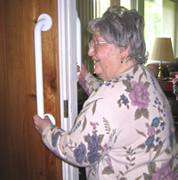

Our Services
There are definite advantages in hiring an expert, especially when that expert also comes with a sterling reputation.
Owner Paul Althoff has been specializing in the selection, positioning, and installation of safety bars in both home and residences since 1983.
Our Team
Paul's wife Barb, a home care physical therapist, accompanies Paul on all installations; she assists him in needs assessment and grab bar placement. We can also come with other products to recommend and demonstrate if you wish it.
If you think other products would be helpful, mention it when you CONTACT us for the installation.
And look over our Client Assessment Questionnaire before you call us to ensure the smoothest dialogue. We want to make sure that we can satisfy all your safety needs when we visit your home.
Get A Head Start on Home Safety
Begin with our FAQ and then download a Client Assessment Questionnaire here.
Give the Gift of Safety . . .
...to someone you love. Call us to arrange for the purchase and installation of grab bars that can keep your loved ones safe and comfortable.
“Performed an on-the-spot safety check for handrails and grab bars when he arrived; then expertly installed four Minnesota-made grab bars in the bathroom and shower to accommodate senior parents moving into my home ...Clearly Paul and his partner have a great deal to offer anyone trying to refit a home for senior safety.” — Angie's List report
Read more testimonials from satisfied clients.